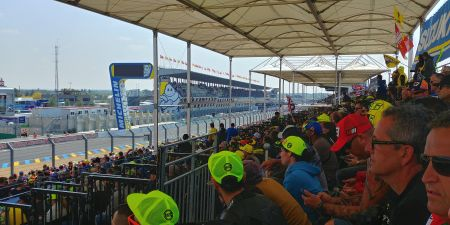
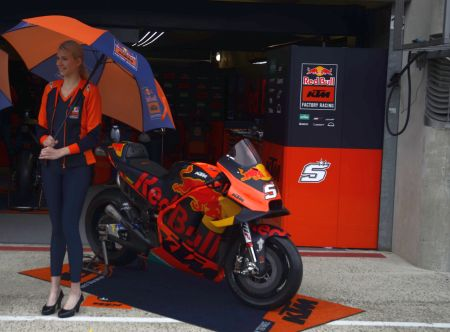
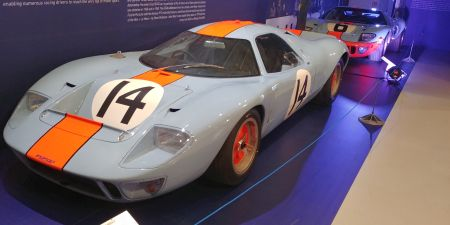

We've been to Le Mans to see the MotoGP a couple of times in recent years, cheering on the local talent, and of course a certain VR46! I'm a huge fan of Andrea Dovizioso, having followed him since he started GP racing back in 125's, so when we got a pitlane walk it was great to get near his bike. No chance of getting near Rossi's though!
Not only is Le Mans famous for motorbike racing though, it's even more famous for the 24 hour car endurance race, and the most emotive race winners have got to be the Gulf Racing GT40's (Okay, it's really a Mirage).
|  |  |
|  |  |